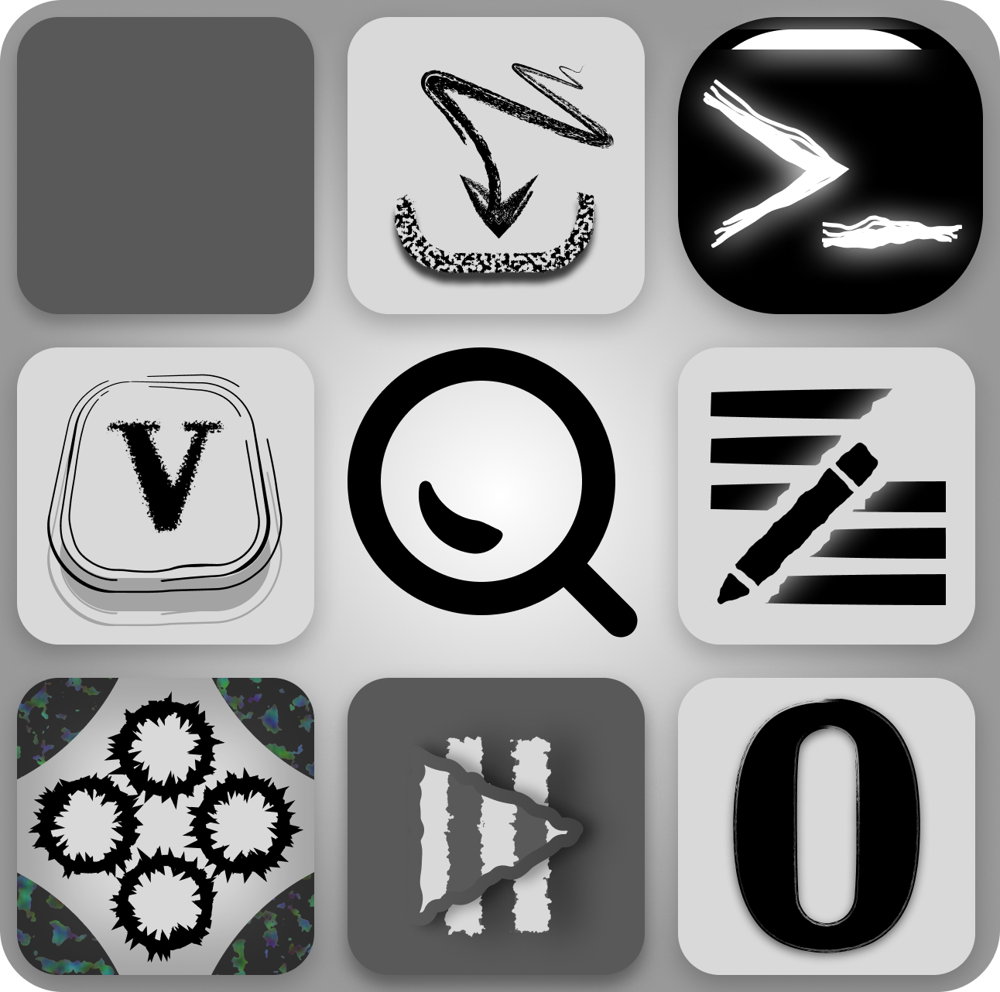

Конечно, не так много можно уместить...
Но иногда нужно быть кратким.
Иначе никогда, ни у кого не возникло бы этого ощущения — чего-то большего.
Замечали?
Ну конечно, конечно замечали... хоть раз в жизни ты чувствовал,
сколько в этом мире всего!
Зачем оно так? Почему? Кто знает...
Найдём?
И всё-таки — как же это прекрасно...

Жажда поиска
Конечно, со знаниями сравнится лишь сам процесс поиска!
Нейросети?.. Возможно...
Но они — всего лишь инструмент.
Они могут объяснить...
Но не зададутся вопросом вместе с тобой.
Ограниченные умы видят ограниченность только в других
Все ли уже придумано?
Идеи… Сколько времени уже существует человек?
Достаточно долго.
Но всё ли уже придумано?
Как бы это проверить?..
The answer to the great question... of Life, the Universe and Everything is... Forty‑two
Не рекламма, а опыт
Как же надоела, рекламма...
Но это не про Osidect!
Да, там упоминается многое и многие...
Но разве личный опыт? Разве эмоции, поиск, открытия —
разве это можно назвать рекламой??
НЕДОВЕРЕННЫЙ ИСТОЧНИК?
Нет, тут всё ещё тратят много времени на поиск.
Но просто поймите — тут немного иная философия...
Наверное, автор сгорел бы от стыда, если бы оказалось, что он где-то соврал.
Так что не бойтесь — вы не столкнётесь с чем-то непроверенным.
Особенно без предупреждения:"вещь требует проверки!!!"
ВАУ или "и что такого?"
Совпадают ли ваши ВАУ с ВАУ автора?
Давайте проверим?
И даже хейтерское: "и что такого?" — тоже в силе.
Тайна логотипа Логотип не пал перед дешифровкой!
Как скоро найдутся те, кто осилят все 9 скругеллных квадратов Osidect?
Не нравится? Создай своё!
Если вам что-то не по вкусу —
всегда можно предложить своё!
Подробности — в сообщениях каналу...
Знать и видеть — Невозможно видеть и не знать… — говорили они.
Память?
И это они называют памятью?
Что же... мой второй мозг смеётся над ними.
Смех без причины — признак дурачины...